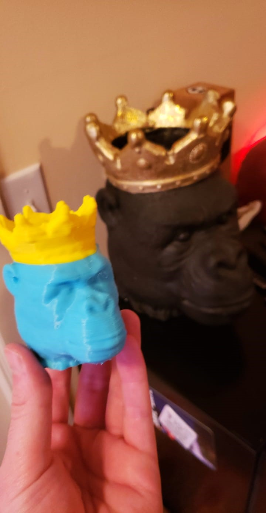
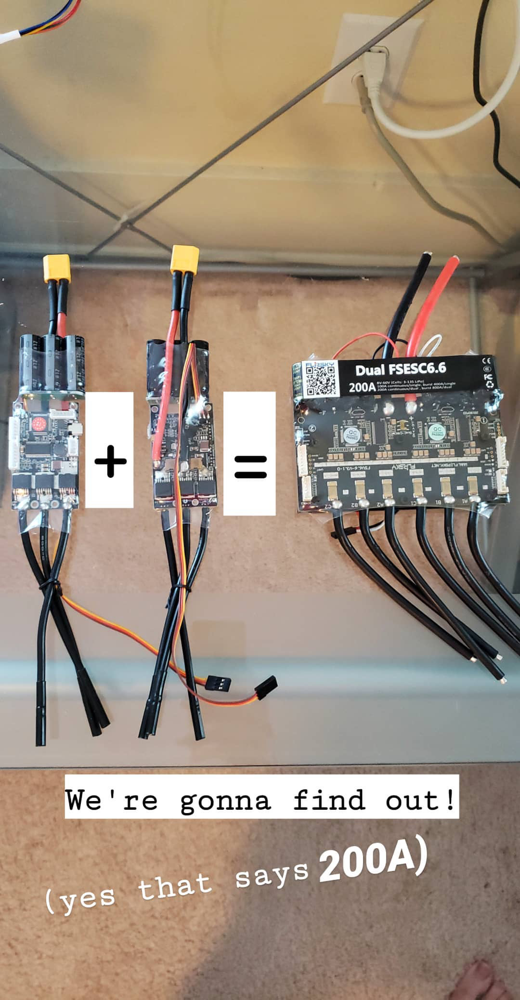
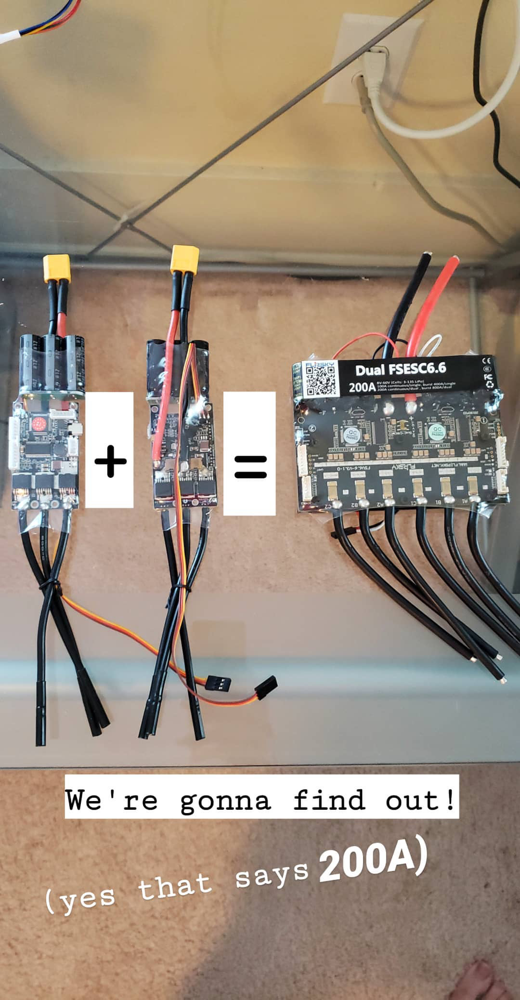

TurtleBot3 Project
Built from parts to laser-based obstacle avoidance and camera-based line following. Utilized Gazebo for digital twin simulations.


GitHub Repository soon
Youtube Video
Learning to scan household objects into digital twins for 3D project assets.
Interior home scanning via ROS platform on Linux laptop.
GitHub Repository Soon Youtube VideoBuilt from parts to laser-based obstacle avoidance and camera-based line following. Utilized Gazebo for digital twin simulations.
3D printed housing with Nvidia Jetson, 2D laser, and webcam. Interfaced with Roomba MCU for control and odometry reading.


Spot welded 12s4p pack, 2000W output, 30-mile range, 35 mph top speed. Designed and 3D printed enclosure, tuned PID loops.


 



2D facial recognition using Transfer Learning with fastai, trained locally on GPU via Jupyter Notebooks.
GitHub Repository Soon30kHz scanning laser interfaced with Nvidia Jetson. Real-time PyTorch camera tracking for balloon auto-pop at 145 FPS.
GitHub RepositoryDeployed on Quest 3, spawning scanned 3D assets onto detected surfaces with physics and grab-ability.
GitHub Repository SoonIntegrated Nvidia's Neuralangelo on local compute. Converted 2D drone video to 3D color mesh.

8” drone running PX4/Ardupilot, capable of autonomous missions. Can also lift 6lb scanning laser for aerial shows.


Replay attacking modern vehicle lock systems.
GitHub Repository Soon3x 80+ MPH racing drones, tuned PID controllers, and learned RF antenna optimization.
GitHub Repository SoonLocal GPU-based cracking experiments.
GitHub Repository Soon